Learning Goals
At the end of this Tutorial, you will be able to:
- Know the difference between two types of branches on GitHub: the main (or master) branch and the gh-pages branch.
- Create local and remote repos for a ReactJS app in the main (or master) branch, link the two repos, and push your app code from local to remote.
- Run the build option within the create-react-app script to create a minimal version of your ReactJS app, and commit it to the gh-pages branch.
- Deploy the build version of an app to GitHub Pages, so that your app runs just as it does on your local machine.
One app – but two GitHubs!
You create ReactJS apps on your local machine. But you will want your apps to be publicly accessible on a remote server for the world to admire and use.
Consider the two examples below from Airbnb Engineering & Data Science.

This is simply a list of GitHub repos. Typically, these are stored in a default branch named main or master. The GitHub web address looks like this:
https://github.com/username
At this address, you can only view and download files.

In this second example, you can view web pages. You could also run an app created with ReactJS or other JavaScript framework.
GitHub can make this possible with a special branch named gh-pages. The GitHub Pages web address looks like this:
https://username.github.io
You can host multiple apps on a single GitHub Pages account. Each app will have its own repo and sub-folder web address. For example:
https://username.github.io/react-ecommerce
https://username.github.io/quiz-app
https://username.github.io/movies-list
In summary, when deploying a single ReactJS app to GitHub, you will be working with one repo – but two branches:
- The default main or master branch for storing your code and assets, and
- The gh-pages branch that enables your app to be run remotely.
One app – but two versions!
When you create an app with Vite, the folders and files below are generated. One folder is named /node_modules.

- The ReactJS code in /node_modules is needed for your app to run on your local machine.
- But /node_modules contains over 6,000 files.
Clearly, it would not be practical to deploy all these files to GitHub or other remote server.
For this reason, Vite includes the /node_modules folder in the .gitignore file.
As a result, your deployed app does not run on GitHub as it does on your local machine.
Fortunately, Vite includes scripts to:
- Build a minimal version of your app by bundling the modules and assets, and optimising the code. This code is stored in a /dist sub-folder.
- Deploy this minimal version to the gh-pages branch of GitHub known as GitHub Pages.
A typical build version of a ReactJS app might be about 500 KB in total file size.
Below are screenshots of a GitHub repo for a ReactJS app. As you can see, there are two branches.
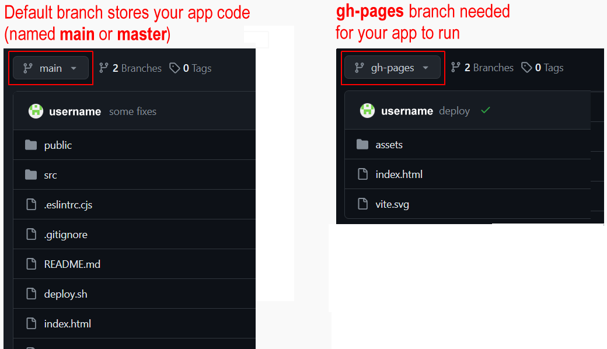The remainder of this Tutorial takes you, step-by-step, through the process of deploying a ReactJS app from your local machine to GitHub and GitHub Pages.
1: Create local and remote GitHub repos
On GitHub, your app will be stored in a new repo separate from all your other folders and files. Follow these steps:
- In your GitHub account create a new repo to host your app. 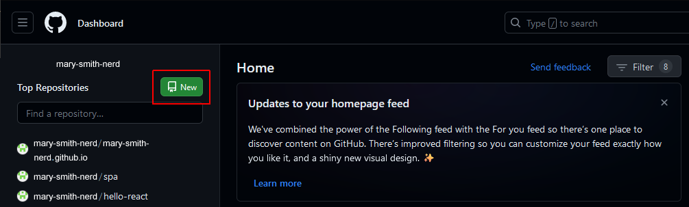
- Give your new repo a name. 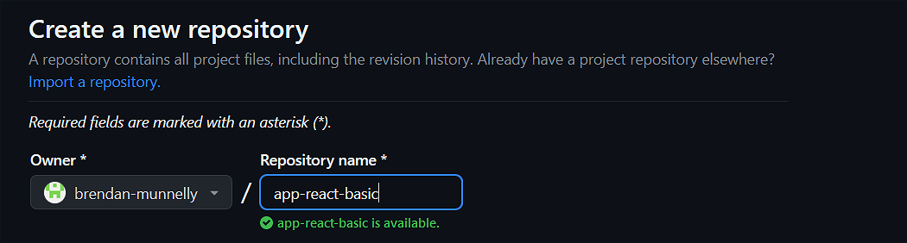
- Do not initialise the new repo with a description, README, license, or .gitignore files.
 Your repo should be empty.
Your repo should be empty. - Click the green Create repository button
- GitHub displays a screen that includes commands for setting up a local repo for your new app and then pushing your app files to the GitHub remote repo. 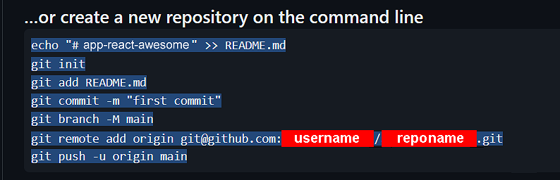
- Select and copy the above commands, paste them to your terminal, and then run them. The command below assumes you are using SSH and have SSH keys set up in your GitHub account. 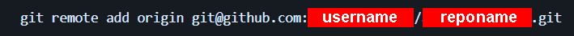 If are using HTTPS instead, the command syntax would be as follows: 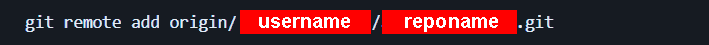
2: Verify your app has been deployed
To check your app has been deployed to GitHub, do the following.
- In your browser, display the GitHub repo of your app. Ensure the Code tab is selected.
- You should see a screen similar to the following. 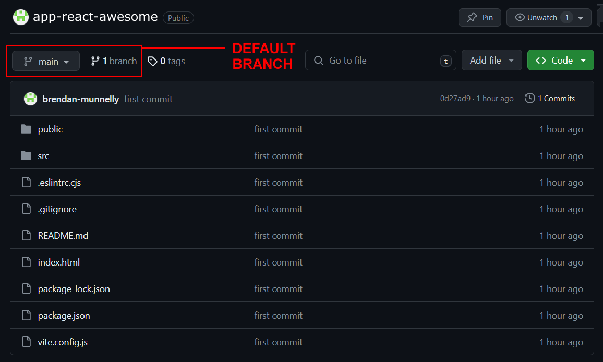
Your ReactJS app is deployed - but not hosted
Your app has been deployed or ‘pushed’ to GitHub. But your app cannot run and display web pages as it can on a local machine. To host your app on GitHub, you need to use GitHub Pages.
3: Download the GitHub Pages package
In a terminal, enter the following command in your app folder to install the gh-pages package as a dev dependency:
npm i gh-pages --save-dev
4: Setting your GitHub Pages sub-folder
You want your app to run on GitHub at a URL in the format below:
https://username.github.io/react-app-awesome
To do this, you need to update two files as follows:
- vite.config.js: Add a base property with your app's repo name. 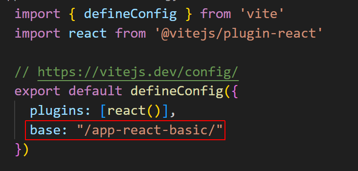 Your file should now look similar to that below. 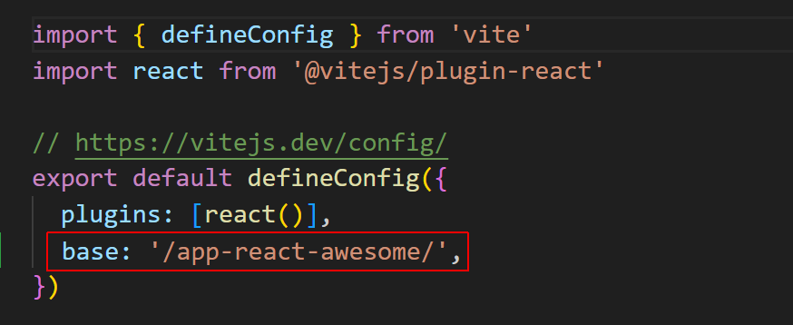
- package.json: Add the following line at the top of the file:
"homepage": "https://username.github.io/reponame/",
The first few lines of the file should now look something like this: 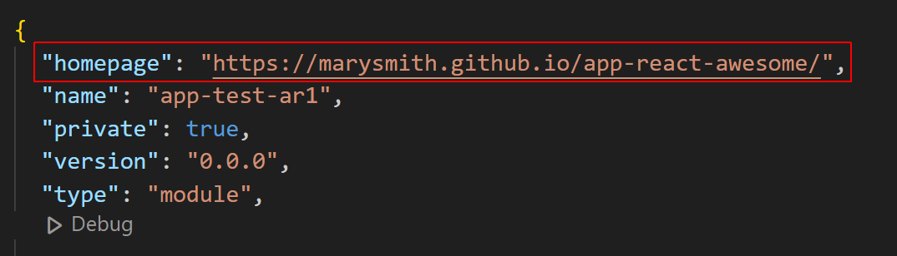
5: Add build and deploy scripts to package.json
In the scripts section of the same package.json file, add these two lines:
"scripts": {
// ... other scripts here,
"predeploy": "npm run build",
"deploy": "gh-pages -d dist"
}
Your scripts section should now look something like this:
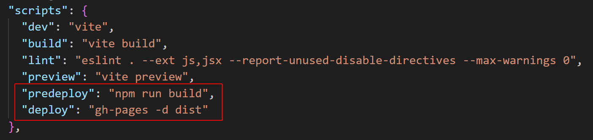6: Build your app for GitHub Pages
After completing all the above steps, run this Vite command:
npm run build
Vite creates a new /dist folder and in its stores a minimised build version of your app that you can deploy to GitHub Pages. Switch to this folder:
cd dist
Run these Git commands:
git init git checkout -B main git add -A git commit -m 'deploy'
And finally, deploy the build version of your app to GitHub Pages:
git push -f git@github.com:username/reponame.git main:gh-pages
If your repository is not set up for SSH, use the HTTPS URL instead:
git push -f https://github.com/username/reponame.git main:gh-pages
✅ Finished!
7: Verify both branches are uploaded
When you view the GitHub repo of your app, with the Code tab selected, it should look similar to that below.
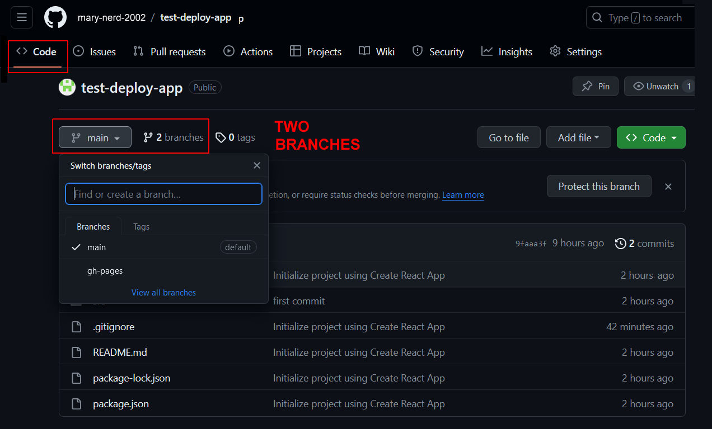As you can see, your app has two branches:
- main: This is the default branch that contains the deployed code for your app. It is often named the master branch. If you wanted to download your app, this is the branch you would download from.
- gh-pages: This contains the extra files needed for your app to be hosted and run remotely on GitHub, just as it would on your local web server.